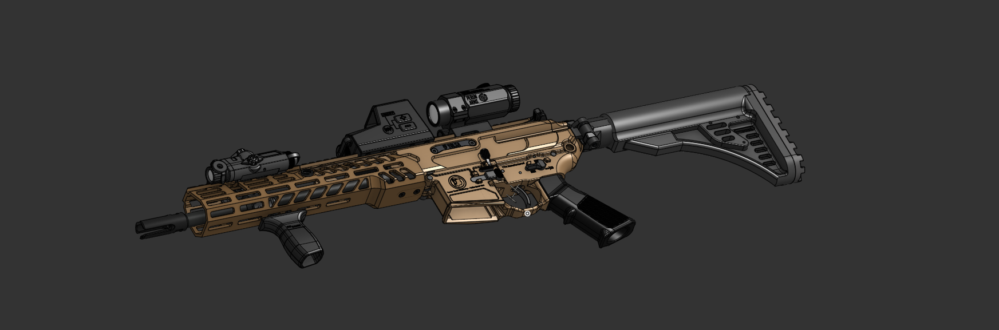
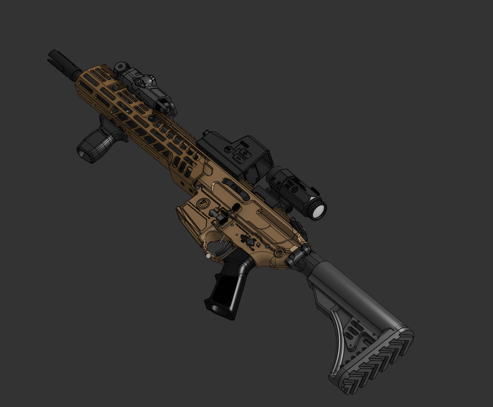

SIG SPEAR
.227 Fury · Short-stroke gas piston · In-house at TTM
The TTM SIG SPEAR is a next-generation assault rifle built around the .227 Fury cartridge. Led by Yoni, the program focuses on high-pressure receiver architecture, controlled recoil, and repeatable manufacturing tolerances across production runs.
From cold-hammer-forged barrels to integrated suppressor geometry, every critical component is designed, machined, and validated at our headquarters — with full traceability from raw stock to finished weapon.
← All systemsPlatform imagery



Platform data
Technical specifications
- Cartridge: .227 Fury
- Operating system: Short-stroke gas piston
- Barrel length: 13″ (standard configuration)
- Overall length: 32.5″ (collapsed)
- Weight: 8.2 lbs (unloaded, with optic)
- Rate of fire: 600–700 RPM
- Effective range: 800+ meters
- Receiver: Monolithic upper, forged aluminum
- Suppressor: Integrated, flow-optimized
- Manufacturing: 100% TTM in-house
Engineering & manufacturing
The .227 Fury cartridge operates at significantly higher pressures than legacy rounds, requiring reinforced receiver geometry and barrel metallurgy validated through sustained fire testing.
Each rifle is serialized and tracked from raw material to final assembly. CNC programming, dimensional inspection, and functional validation occur at every production stage before a weapon leaves our facility.
Program lead: Yoni, Lead Engineer
Apply to this program